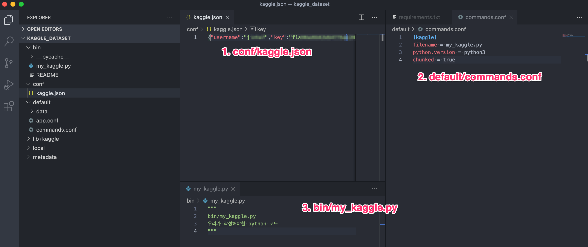

Splunk Custom Search Command 개발 - (2)
이번 포스팅에서는 Splunk Custom Search Command 를 이용하여 실제 Kaggle 에서 Dataset 을 Splunk 로 가져오는 앱을 만들어 보겠습니다.
미리 완성될 Kaggle SPL의 옵션값들을 떠올려 보는것이 만들어 나갈 코드를 어떤식으로 개발할지 방향성을 잡기에 쉽습니다.
아마 Kaggle 앱은 아래와 같이 동작하면 좋을것 같습니다.| kaggle competition="titanic" data="train.csv"
또한 불러올 데이터셋이 time series 데이터일 경우를 대비하여,time_field="create_time" time_format="%Y/%m/%d %H:%M:%S"
라는 필드도 옵션으로 넣어줄 수 있게 만들어 주면 좋을 것 같네요.
intro
데이터분석 공부와 Kaggle 도전도 목표에 있고, 만들어두면 언젠가(?) 도움이 될듯하여 그리고 GeneratingCommand에 적합한 예제가 될듯하여 이 앱을 만들어 보기로 했습니다.
앞선 포스팅에서 설명드린 protocol 중 v2 protocol을 이용하여 만들어 볼 예정입니다.
간단한 명령어는 v1 protocol로 만들어도 되긴 하는데, 이전 버전의 라이브러리라 그런지 부족한 부분들이 꽤 있습니다. (v1에서 기본으로 제공해주는 getKeywordsAndOptions 함수는 v1 commands 를 실행 시 넘어오는 keyword 와 option을 파싱해줘야 하는데 제대로 파싱이 안됩니다…)
kaggle API 확인
먼저 kaggle API 동작방식을 이해해야 python 코드로 구현할 수 있습니다.
Kaggle API Documents에는 pip으로 다운받은 kaggle 명령을 cli 에서 실행시켜서 (kaggle datasets download -d [DATASET]) 데이터셋을 다운을 받는데, 저희는 파이썬 코드상에서 SDK를 이용하여 다운 받고자 합니다.
Kaggle API의 github을 찾아보니, 다음과 같은 코드와 주석을 찾았습니다.
98 | ... |
코드를 훑어본 결과 Kaggle SDK 호출하기 위해서는 먼저 인증 단계(authenticate function)가 이루어 져야 하는데,
KAGGLE_로 시작하는 환경변수에 kaggle.json의 path를 지정 하여 인증하거나~/.kaggle/kaggle.json의 파일을 바로 인증
둘 중 하나의 방식으로 인증을 해야 하는 것을 알았습니다.
2번 방식을 사용하기에는 스플렁크앱이 어떤 사용자로 구동 되는지 실제 환경마다 다를것이기 때문에 저희는 1번 방식인 environment을 통해 인증을 진행하는 방식으로 kaggle 코드를 작성해 보겠습니다.
kaggle.json 다운로드
먼저 kaggle 홈에서 자신의 api key 정보를 다운로드 합니다.
다운받은 kaggle.json 파일은 단순 text 파일로 자신의 계정 및 API token이 json 형태로 작성되어 있습니다.
해당 파일을 일단 앞선 포스팅에서 만든 Splunk App 경로에 conf 라는 디렉토리를 추가하여 저장합니다.
App 셋팅
앞선 포스팅의 App 구조에서 설명한대로 작성한다면 conf 와 lib 디렉토리는 없지만 이 두 디렉토리는 명령어를 관리함에 있어서 명령어별로 Python library 및 config 들을 관리하기 위한 디렉토리라고 보시면 됩니다.
- conf 디렉토리 : 명령어별로 사용되는 설정값이 저장될 디렉토리
- lib 디렉토리 : 명령어별로 사용되는 python library 가 저장될 디렉토리
이 디렉토리들은 필수디렉토리는 아닙니다. 한 앱에서 여러 Custom Search Command를 효율적으로 관리하기 위해 각 명령어별로 python library 경로와 설정값들을 분리시켜 저장시키는 공간이라고 보시면 됩니다.
앞선 포스팅의 기본 디렉토리에 conf, lib 디렉토리가 추가된 App 구조는 다음과 같아 집니다.

conf/kaggle.json: Kaggle에서 다운받은 API token 파일default/commands.conf: [kaggle] stanza를 추가한 설정 파일bin/my_kaggle.py: 우리가 실제로 작성해야할 Python code
library 및 conf 셋팅
저희는 bin/my_kaggle.py 에서 kaggle 모듈을 import 해야 합니다.
(+ Custom Search Command 개발에는 splunk-sdk도 필요 합니다.)
python library 관리
Custom Search Command앱을 몇개 만들어 보면서 pip 으로 다운받는 라이브러리들을 여러방식으로 관리해봤지만, 이 방식이 가장 깔끔했습니다.각 명령어별로
lib/[my_command]/디렉토리를 만들고 해당 경로에 requirements.txt 를 관리하여 각각 library를 다운로드 받고, 각bin/[my_command]의 코드 최초에 해당 디렉토리를 sys.path로 등록
저희는 kaggle 1.5.12 버전과 splunk-sdk 1.6.14을 사용할 예정이라, requirements.txt 에 버전을 작성하고pip3 install -r requirements.txt --target=$SPLUNK_HOME/etc/apps/kaggle_dataset/lib/kaggle/. 을 실행하여 아래와 같이 해당 –target 디렉토리에 kaggle 및 splunk-sdk와 dependency 라이브러리들을 다운받습니다.
conf 관리
또한 명령어별로 config 값들을 관리할 필요가 자주있는데, 이번 경우에는 Kaggle 사이트에서 다운받은 토큰파일인 kaggle.json 파일입니다. 해당 파일을 conf 디렉토리에 위치 시켜줍니다.
실제코드
코드는 먼저
- requirement 들을 다운받은 library 경로를
sys.path로 등록시켜주고, - 위에서 kaggle github 코드를 분석한대로 authenticate가 구동되게 하기 위해
kaggle.json파일이 있는 conf 디렉토리를os.environ['KAGGLE_CONFIG_DIR']에 등록시켜주면 됩니다.
즉, 이번 my_kaggle.py의 코드는 아래와 같이 시작이 됩니다.
1 | import sys |
예제 GeneratingCommand 코드
먼저 실제 어떤식으로 동작하는지 직접 보기위해 단순한 GeneratingCommand 을 만들어 실행 시켜 보겠습니다.
1 | import sys |
bin/my_kaggle.py을 위와같이 작성 한뒤 splunk 재시작 후 | kaggle을 실행시켜 봅니다.
(최초 명령어를 셋팅할때만 splunk 재시작이 필요합니다. 이후 코드 수정시 재시작 불필요.)
만든 앱의 명령을 다른 앱에서도 실행시키기 위해서는, 권한설정을 해줘야 합니다.

코드는 간단합니다, 앞선 포스팅에서 설명드린대로 GeneratingCommand 을 상속받아 여기서는 generate라는 function만 정의해주면 되고, yield 처리된 값이 Splunk의 event가 됩니다.
yield 를 json 형태로 넘기면 그대로 json의 key 값이 스플렁크의 필드명, json의 value 값이 해당 필드의 값이 됩니다. 여기서는 getEvent라는 함수를 추가하여 Splunk의 internal field(_time, _raw) 들을 채워주도록 하였습니다.
각 type별 상세설명은 여기 docs에서 확인 가능하며, 이 공식 example code 들을 보는 것도 도움이 되었습니다.
Option도 직관적이지만 Configuration Class와 Option Class을 참조하시면 도움이 됩니다.
실제 my_kaggle.py 작성하기
이제 우리가 할일은 Option 클래스로 필요한 옵션값(명령어 인자값)들을 받고, Generete 함수안에서 Kaggle 모듈을 이용해 필요한 Dataset만 가져와 yield 처리 해주면 됩니다.
코드 전체를 설명하지는 않겠습니다. 만들어진 코드는 아래와 같습니다.
1 | import sys |
Option Class으로 저희가 본 포스팅 시작할때 구상한 옵션값들 competition, data을 필수로 사용자가 입력하도록 합니다.
require=True의 옵션일 경우 사용자가 해당 옵션값들을 미입력시 에러처리를 아래와 같이 제공해줍니다.
generate 함수안에서는 kaggle API의 competition_download_file 을 이용하여 옵션값으로 전달받은 competition 이름과 dataset 이름으로 대상 csv 파일을 다운받아, json 형식으로 읽은 후 yield 처리 해주기만 하면 됩니다.
(competition_download_file 함수는 파일을 current directory에 파일을 다운로드 하기 떄문에, 삭제하는 코드도 넣어줬습니다.)
완성된 kaggle 명령어
완성된 kaggle 명령은 아래와 같이 동작합니다.

competition 옵션값으로 넘겨줄 값은 실제 Kaggle 웹사이트의 다운받을 competition 링크로 들어가 data 탭을 눌러 아래그림의 1에 있는 부분을 넣어주면 되고, data 옵션값은 실제 csv 파일명(아래그림의 2)을 넘겨주면 됩니다.
그리고 kaggle API github page에 아래와 같은 안내글이 있었네요..Note: you will need to accept competition rules at https://www.kaggle.com/c/<competition-name>/rules
각 competition 별로 있는 rules는 꼭 페이지에서 accept 해줘야 합니다.. API 상에 accept하는 함수가 있는지 찾아봤는데 안보이네요.
아마 dataset 중 csv가 아닌 json도 있을 것입니다. 이는 옵션값
[type=csv|json]으로 코드상에서 해당 타입을 처리해주는 분기부분만 추가하면 될것 같은데, 필요하신분은 추가 개발을 해보시길 바랍니다.
지금은 해당 명령을 수행할 때 마다 kaggle API을 이용하여
다운로드를 수행하게됩니다.
매번 명령을 수행할때 마다다운로드받아서 splunk에 밀어넣는 작업은 비효율적임으로, 이런 데이터들은 outputlookup을 통해 한번 가져 온 이후 그 다음부터는 API 호출없이 inputlookup을 통해 바로 이미 가져온 데이터를 사용하는게 효율적일 것입니다.앞서 설명드렸듯이 이미 Custom Search Command로 가져온 데이터들은 모든 SPL을 활용 가능합니다. (outputlookup, collect, stats 등등)

끝.
이상으로 kaggle 에서 dataset을 다운받아오는 GeneretingCommand를 만들어봤습니다.
다음 포스팅에서는 이 kaggle 명령을 time이 있는 데이터셋을 가져올 수 있도록 변경해보고 몇가지 팁들을 작성하도록 하겠습니다.